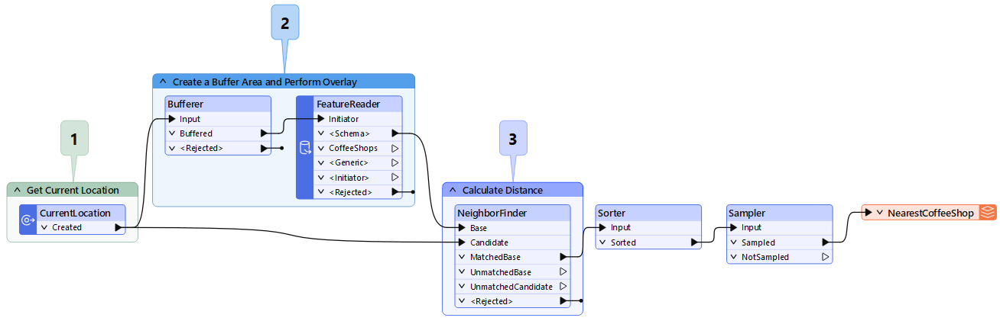
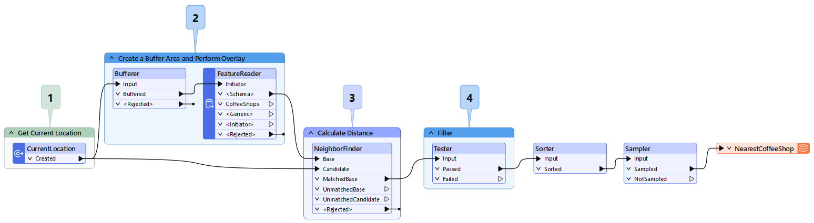
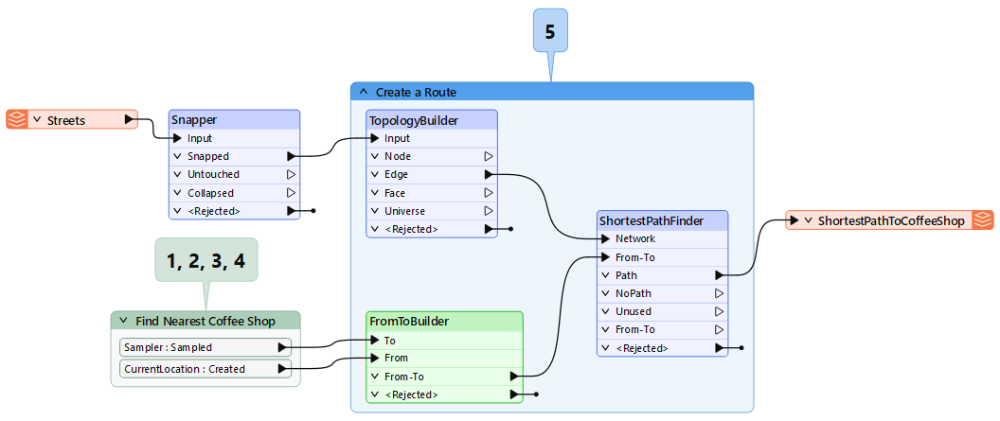
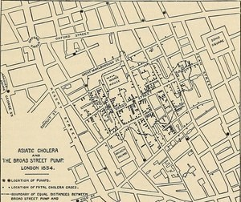

After completing this lesson, you’ll be able to:
“Hey [Siri/Google], find the nearest coffee shop”
Have you ever wondered how the virtual assistant you carry around in your phone can find nearby businesses? Technically speaking, this all starts with voice recognition… but let’s save that for another time. Today, we’re focusing on the spatial analysis done behind the scenes.
Spatial analysis tries to describe, explore, and explain patterns and relationships in topology, geography, and geometry. We use spatial analysis techniques to answer questions about relationships between objects by filtering, measuring, and overlaying spatial data. There are many types of spatial analysis, and we’ll discuss a few in this article, but first, let’s get some coffee.
“Hey [Siri/Google], use my device's GPS to determine my current position on Earth. Then, draw a small circle around me so I don’t have to wait for you to compare my position to every known coffee shop. For all the coffee shops in my small circle, determine the distance to my current position. Lastly, tell me which is closest and how to get there.”
Okay, you would never say that, but that’s how your virtual assistant interprets your “nearest coffee shop” request. Let’s break it down:

This FME workspace shows how your location (1) can be used as a data point along with coffee shop data (2) to determine which shop is best suited for you (3).
One of the most potent things about spatial analysis is the ability to incorporate multiple datasets into your analysis. In the example above, we are measuring the distance between two points: your current location and the coffee shops.
Additionally, we’re creating a temporary polygon dataset, a buffer area, that will allow us to speed up our analysis by reducing the number of coffee shops we want to include.
By combining data and applying three spatial transformations (Buffer, Point on Area Overlay, and Nearest Neighbor), we can determine which coffee shop is closest!
So far, we’ve only been worried about which coffee shop is geographically closest to us. But what if you also wanted to know which coffee shop serves ethically sourced coffee?
Like your coffee, your analysis is made the way you want it.
One of the most common steps in spatial analysis is filtering features based on attribute values. An attribute is a piece of information stored with each geographic feature, e.g., the name of a coffee shop might be stored in a text attribute called Name. Filtering can be as simple as filtering for a boolean value (i.e., “x = true/false”) or more complex methods like regular expressions and composite test criteria. For example, suppose our coffee shop dataset includes attribute data about whether the vendor uses ethically sourced beans. In that case, we can use this information to filter out unwanted coffee shops (step 4 below) that do not meet our search criteria (i.e., ethically sourced = true). If your source dataset does not have attributes, you may be able to join additional datasets or create new attributes based on a calculation.

Adding a validation step (4) to your FME workflow allows you to filter out coffee shops you’re not interested in and only keep those that meet your requirements.
Regardless of what attributes your data does or doesn’t have, it’s worth noting that a complete dataset will help make your analysis more thorough and ensure you get an accurate output.
If you’ve ever had bad coffee, you know no amount of sugar and/or cream can salvage the taste. Chances are the beans went stale, and now you’re stuck with a hot cup of disappointment.
The same is true for spatial analysis or any analysis for that matter. If you start with bad beans (input), you’ll have a lousy coffee (output). This is why validating your data and using high-quality datasets in your analysis is essential. Using quality source datasets will help ensure your analysis produces accurate results.
We know what coffee shops suit our needs but don’t know how to get there. It's time to do some route analysis. Route analysis is determining an optimal path from origin to destination. This may include the shortest path, the path that requires the fewest left turns, or the path that takes you past your favorite pastry shop to grab a bite before you get your coffee.
Route analysis is possible because roads are topological networks of nodes (intersections) and edges (roads). These networks allow us to make calculations based on a source node (current location) to a destination node (coffee shop) on the network. Topological networks define the spatial relationship between connecting or adjacent features in a geographic dataset.
Why is this important? In most cases, you can’t walk or drive in a straight line to get from point A to B. Instead, you must traverse your way through a street network to reach your destination. That may include walking or driving along streets and making a left or right turn at an intersection to reach your destination.

Now that you’ve filtered out your coffee shops of interest, you can integrate this data with a street network dataset. With the correct FME transformers, you can find both directions and identify the shortest route to get your coffee ASAP!
Once again, it is worth stressing the importance of validating your data before performing an analysis. Validating before analyzing will ensure you don’t waste any time (or gas) getting to the coffee shop by taking a less optimal route.
If we were performing a route analysis on a road dataset with bad topology like overshoots and undershoots, we likely wouldn’t be able to determine the most efficient route to our destination. As a result, you might take more turns than necessary, wasting precious time trying to orient yourself instead of sipping on your beloved coffee. Additionally, for something like route analysis, you’ll want to consider the relevancy of the road dataset.
Since new developments are constantly popping up and new roads are paved, you’ll want to ensure your analysis uses the most recent roads dataset. You may also want to re-run or schedule your analysis to run when new datasets become available to ensure you are still on the best path. It’s worthwhile to re-run a route analysis in case a new road is added to the network, as it could make the path from your house to the coffee shop more efficient, saving you time and money in the long run.

Some quick spatial analysis processes make finding the shortest route from A to B simple.
Now we know which coffee shop we want to go to and the fastest route to get there. But your virtual assistant mentioned that it looks a little busy at your destination! This critical information is an example of cluster analysis.
In today’s digital world, we can determine how busy a coffee shop is based on mobile phone location data. How is this possible? Users with location services enabled can access their current position through services like Google Maps. These point datasets can be used to analyze traffic at businesses and can be compared to past statistics. This can be as simple as performing a point-on-area overlay to count how many cell phones were in the coffee shop at a given time. Since there are historical records of cell phone usage, these services can help you determine when the coffee shop is busiest and if they are currently at their usual capacity, more or less busy than normal.

When you click on a business in Google, you can see it’s most and least busy. This is all based on cluster analysis going on behind the scenes.
This is a fascinating analysis because it requires near real-time data to keep people like you informed about the business you are about to go to. This way, you can make sure that next time you start your coffee shop journey just a bit earlier next time so you’re not stuck waiting in line.
One of the earliest examples of cluster analysis was performed by Dr. John Snow in 1894 while London was experiencing a cholera outbreak. Dr. Snow performed a cluster analysis by plotting the location of deaths on a map of London. This eventually led to the discovery of a contaminated water pump, which later proved his theory of how cholera is spread. What you can learn from simply plotting points on a map is incredible!

So far, we’ve explored an example of vector-based spatial analysis. This is because the datasets used were points (locations), lines (street networks), and polygons (areas of interest).
However, performing spatial analysis with raster data (imagery or pixel-based data) is equally essential. Raster analysis is commonly used to model the movement of phenomena like wildfires and oil spills.
Of course, you’re not limited to only rasters or vectors in your analysis either! Spatial analysis transformations allow you to overlay vector features (i.e., points, lines, and polygons) onto raster datasets and vice versa if you want to overlay your raster data on top of 3D vector data. You have endless possibilities depending on the output you hope to get from your analysis.
This lesson is adapted from a post on the Safe Software blog.